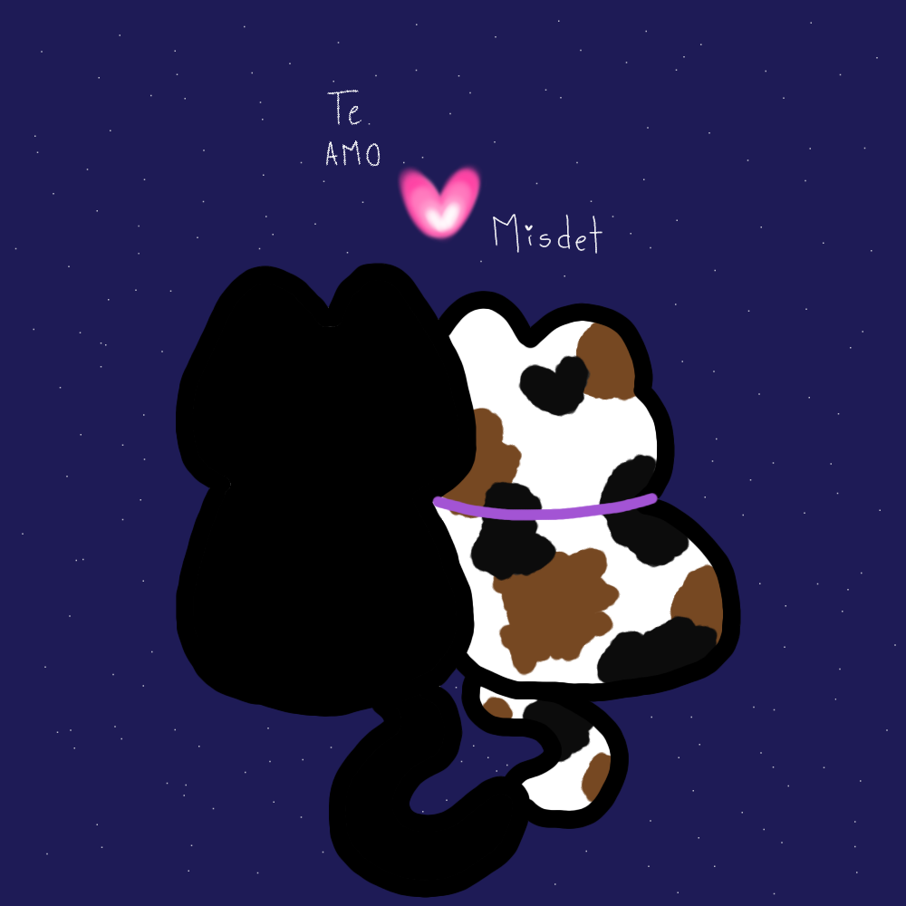
⋆ ˚｡⋆୨ Mis recuerdos mas especiales de ti ୧⋆ ˚｡⋆
cada imagen guarda un pedacito de lo que somos
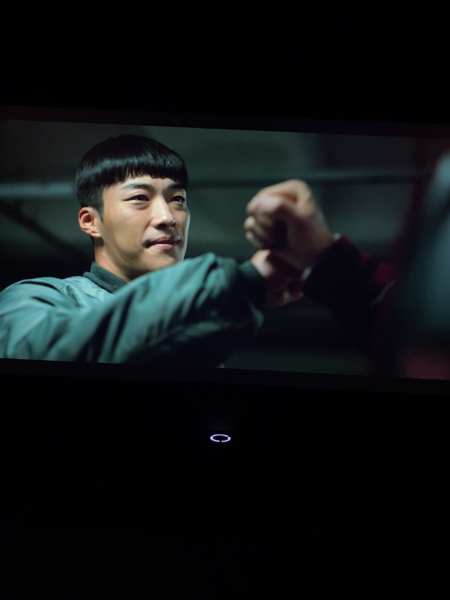
✧ El gran momento donde decidí dar un paso adelante a pesar del miedo y del posible rechazo que en ese momento veía muy posible, pero no le di tanta importancia porque mi amor por ti siempre superará cualquier obstáculo. (˶ᵔ ᵕ ᵔ˶) ‹𝟹 ✧
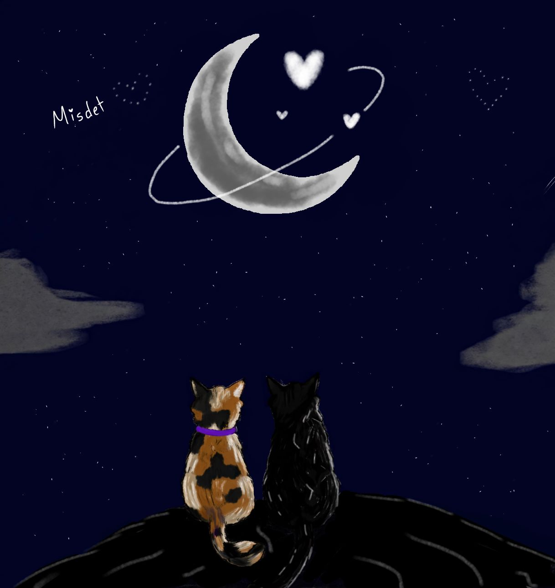
✧ Cómo voy a poder olvidar el gran momento en el que me inspiré tanto en todo lo que sentía por ti que nos dibujé en forma de gatitos, si de por si el sentimiento del amor es increíble, contigo siempre se vuelve infinitamente mucho mejor y eso es porque tú siempre serás mi inmenso amor. ₍₍⚞(˶˃ ꒳ ˂˶)⚟⁾⁾ ✧
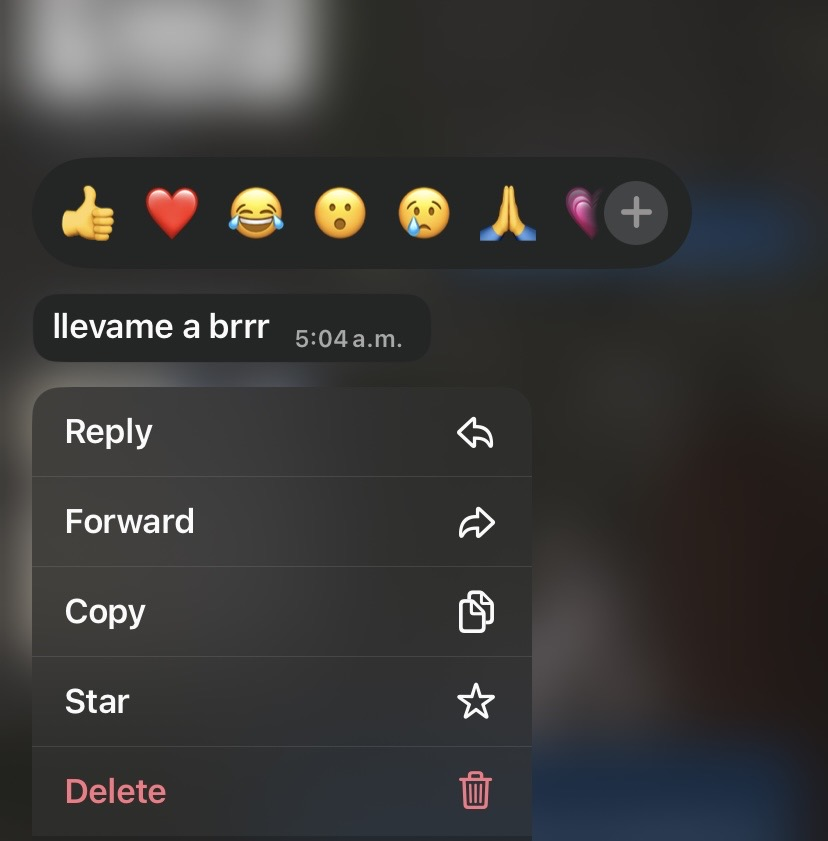
✧ Cómo voy a olvidar la noche en que todo cambió, la noche en la que me di cuenta de que eras tú y nadie más, la noche en la que tuve el gran placer de conocerte, escucharte y sobre todo estar a tu lado, sin duda siempre voy a atesorar ese momento pase lo que pase, porque contigo todo se vuelve tan especial que no existen palabras suficientes para describir lo que siento al respecto, te amo. ૮꒰ ˶• ༝ •˶꒱ა ♡ ✧
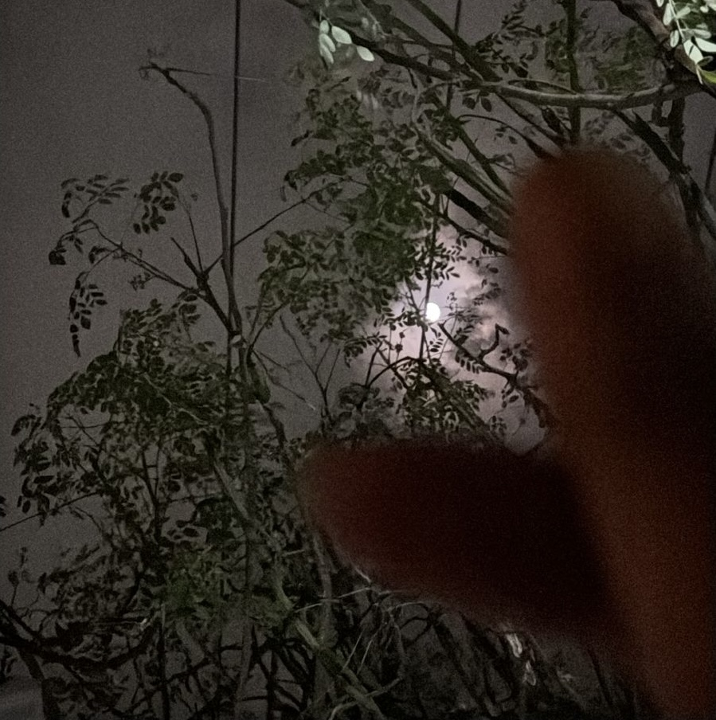
✧ Amé sin duda el primer fondo que tuve de ti, tú puedes verlo como algo súper sencillo, pero yo ahí veo mucho más que eso y siempre veré en ti mucho más de lo que tú misma ves, ojalá algún día pueda mostrarte el reflejo de lo grandiosa que eres incluso en la más mínima cosa, porque para mí cada detalle tuyo tiene algo especial que me hace admirarte y quererte aún más. ₍^. .^₎Ⳋ ✧
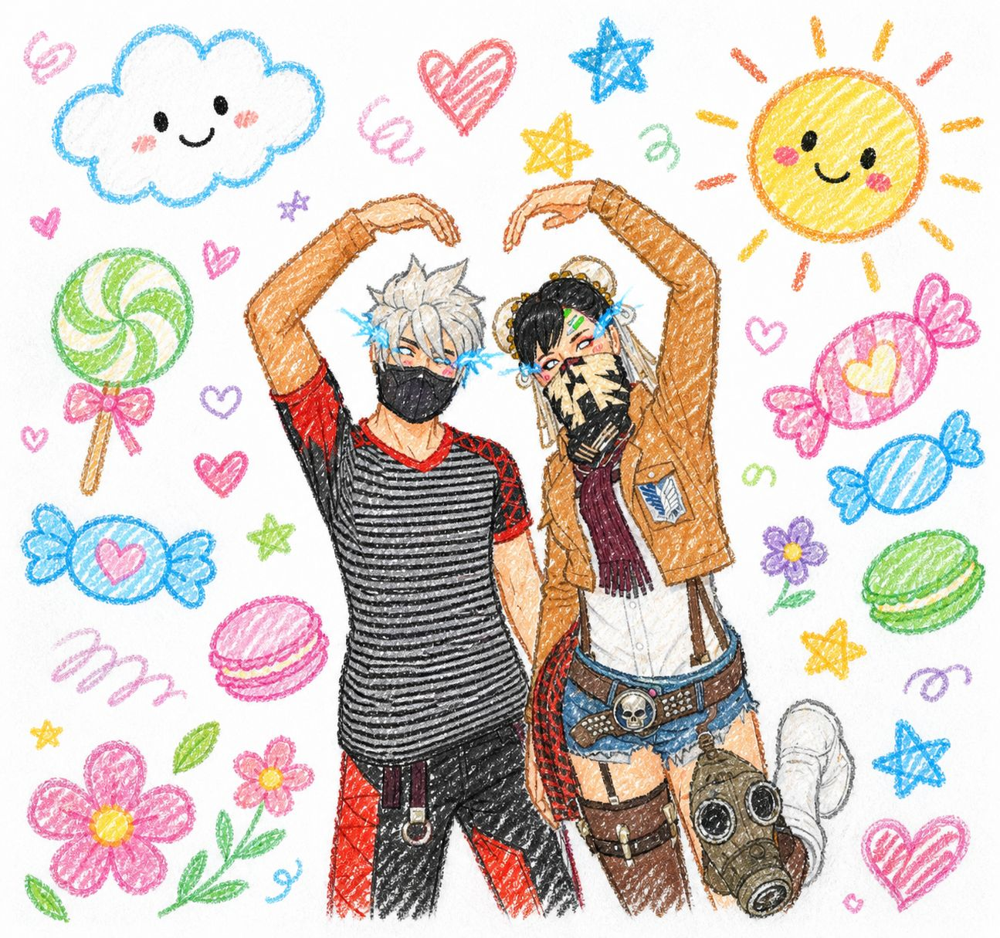
✧ Esa foto que hiciste para mí fue súper, pero superrr especial, el hecho de que te tomes parte de tu tiempo para hacer algo pensando en mí es simplemente increíble, porque todo lo que haces lo vuelves increíble, y saber que dedicaste un momento de tu día para crear algo para mí hizo que esa foto tuviera un valor enorme en mi corazón. (っ˶ ˘ ᵕ˘)ˆᵕ ˆ˶ς) ✧
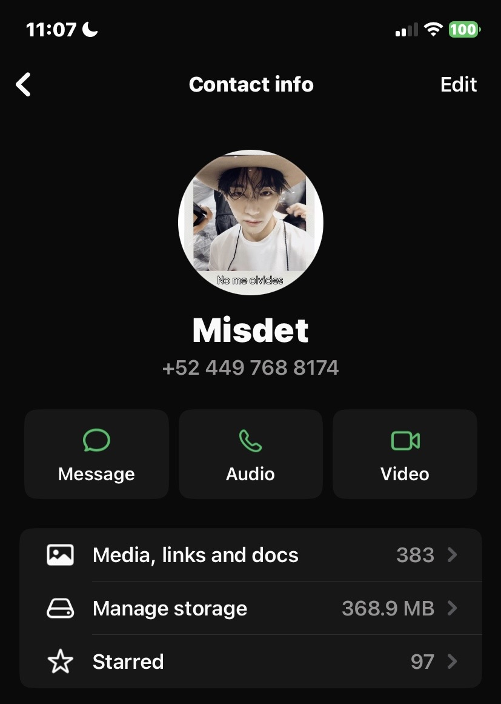
✧ No te voy a mentir, lo sentí como una indirecta y por eso lo guardé, pero que quede claro que yo siempre voy a respetar a mis 7 socios y sobre todo a Kim Tae-hyung JASJKAJSAKJ, yo sé que él siempre va a ir primero. (˶˃𐃷˂˶) ✧
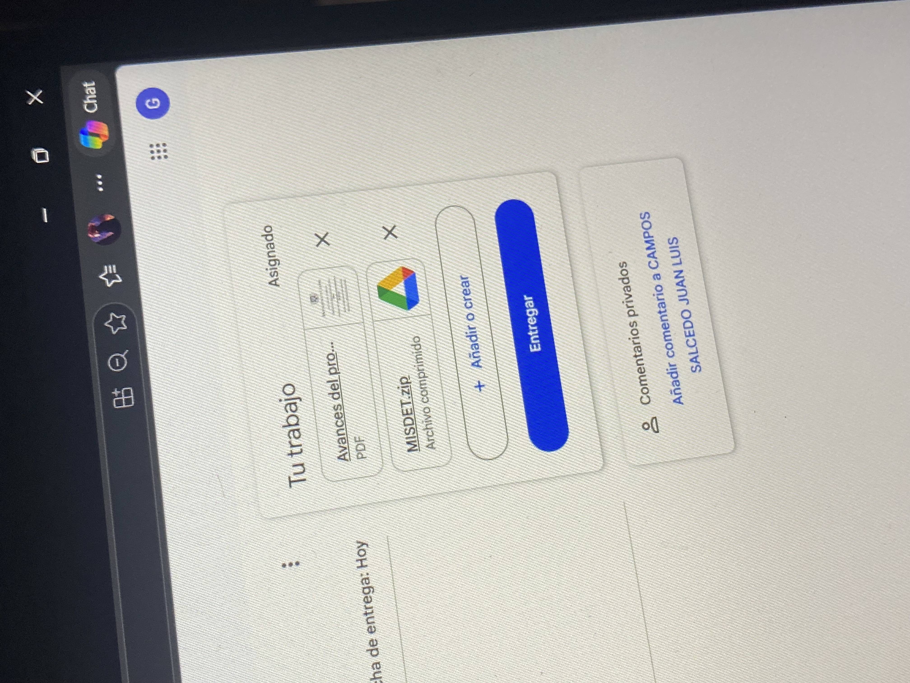
✧ La vez que lloré haciendo un proyecto, literalmente eras tú en todos lados, detalles y cositas que me recordaban a ti, aunque me dolió hacerlo, nunca me arrepentí de nada, porque todo lo que hago por ti me nace del corazón, así como me nace quererte y amarte cada día de mi vida, porque incluso en los momentos más difíciles siempre encuentro una razón para seguir adelante cuando pienso en ti. ૮₍ ˶ᵔ ᵕ ᵔ˶ ₎ა ✧
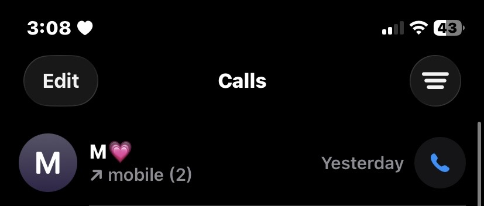
✧ Yo todo esquizo tomándole foto a una de las mejores llamadas de mi vida, un gran paso para nuestras futuras madrugadas en dc JSJKASJAKSJA. :꣓ ✧
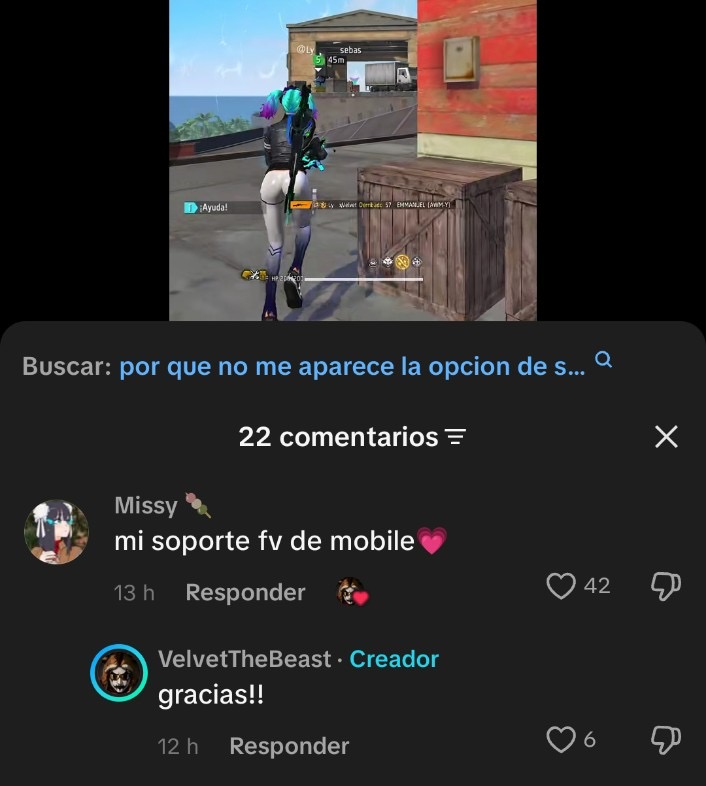
✧ Mi primer ataque de celos y el momento en el que me di cuenta de algo que jamás había sentido así, porque por primera vez no quería que alguien más escuchara tus risas, tus bostezos, tus historias o esos pequeños detalles tuyos que para muchos podrían parecer simples, pero que para mí son un tesoro. Me descubrí pensando que daría cualquier cosa por seguir siendo la persona que escucha cómo estuvo tu día, la que se ríe contigo a las tres de la mañana y la que conoce todas esas versiones de ti que no todos tienen la suerte de ver, y sí, admito que los celos aparecieron cuando imaginé que otro hombre pudiera disfrutar de tu compañía, escuchar tu voz o compartir momentos contigo, no porque dude de ti, sino porque me encantaría ser yo quien tenga el privilegio de seguir descubriendo cada una de tus historias, de escuchar cada una de tus ocurrencias y de seguir enamorándome de todos esos detalles que te hacen ser tú, en fin no respires el mismo aire que los hombres amor uwU #humor. ✧
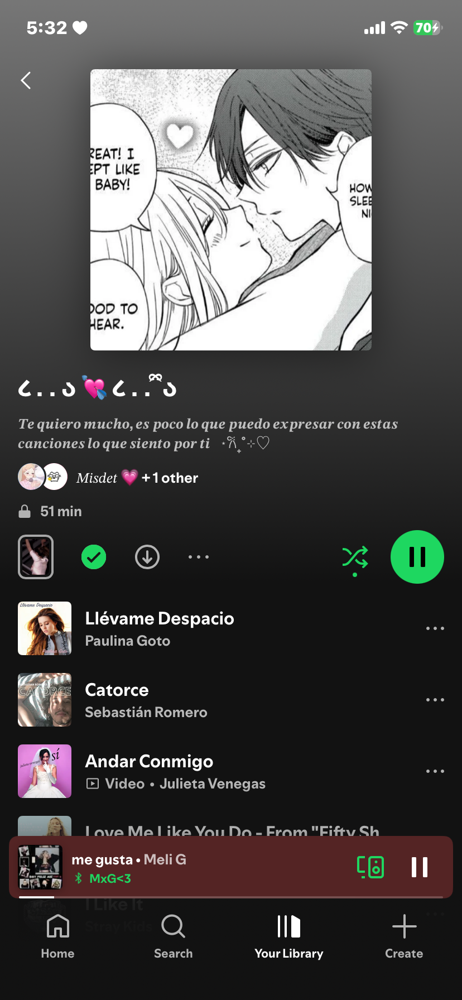
✧ Cómo no voy a atesorar tu playlist hermosa, amorrr, la amo. Siempre que tenía tiempo me ponía a escucharla, porque era una manera de sentir que estabas a mi lado escuchándola conmigo. Cada canción se volvió especial porque venía de ti, y de alguna forma me hacía sentir más cerca de ti incluso cuando no podíamos estar juntos. (╥‸╥) ✧
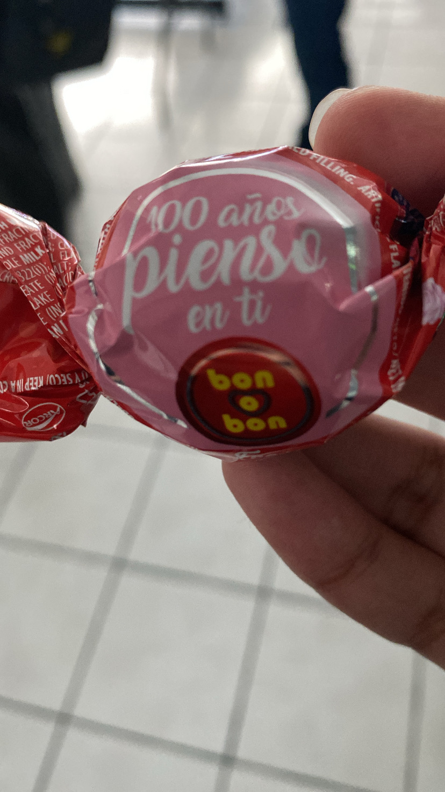
✧ El dulce que define toda mi vida, no hay más. ( ˶˘ ³˘)♡ ✧
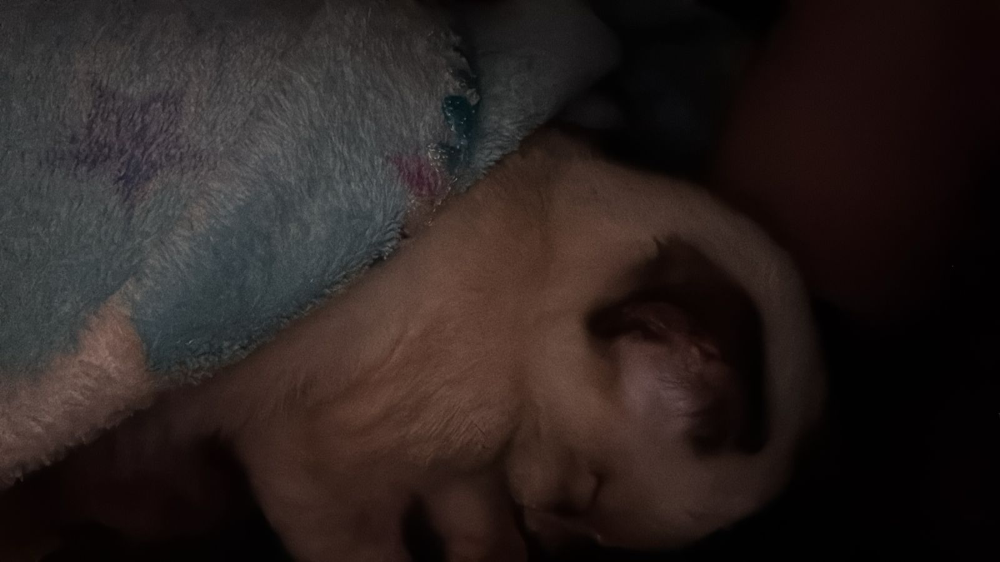
✧ AMOOOO todas las fotos que me mandas de tus hijos, todas de verdad, son tan tiernos y tan adorables que cada foto me saca una sonrisa, pero lo que más me gusta es saber que son así gracias a la grandiosa persona que tienen a su lado, porque tú les das amor, cariño y una compañía que vale muchísimo más de lo que imaginas, siempre he pensado que eres una persona maravillosa y única, de esas que dejan una huella bonita en todo lo que tocan, por eso cada vez que veo una foto de ellos también veo un reflejo de ti, de tu forma de ser y de todo lo bueno que llevas dentro. ૮꒰ ྀི >⸝⸝⸝< ྀི꒱ა ✧
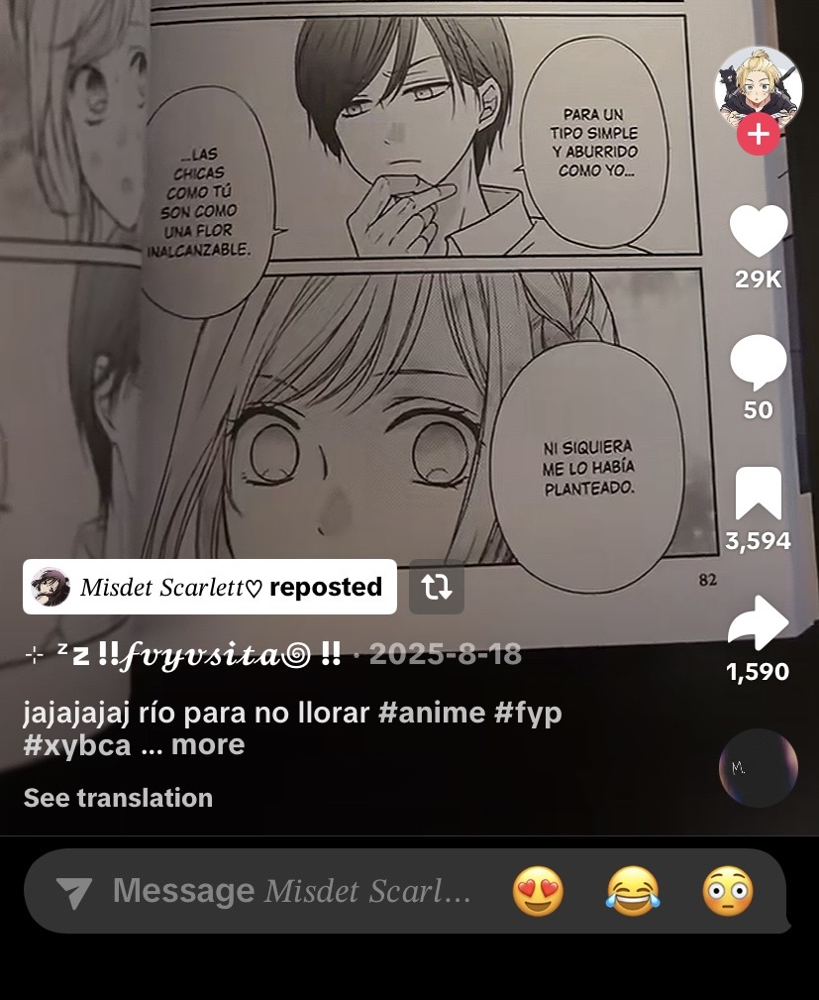
✧ Como tu fan número uno, siempre le voy a prestar atención a todo lo que compartes, aunque sea lo más mínimo, porque tú siempre tendrás toda mi atención a tu disposición, me encanta conocer cada pequeño detalle de tu día, tus gustos, tus pensamientos y todas esas cositas que te hacen ser quien eres, para mí nunca serán cosas insignificantes, porque cuando se trata de ti, hasta el detalle más pequeño se vuelve especial. ૮₍ ˶ᵔ ᵕ ᵔ˶ ₎ა ✧
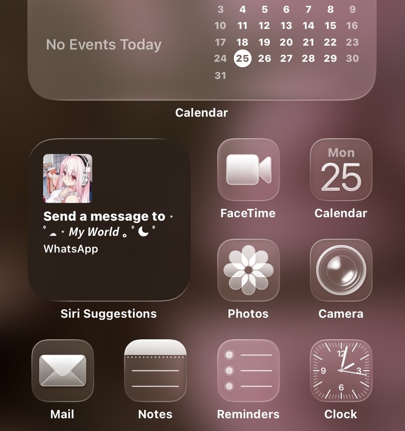
✧ Me dio ternura que hasta mi teléfono ya lo viera como algo que tenía que hacer todos los días, aunque yo nunca dudé de hacerlo, la verdad es que a mí siempre me dan ganas de escribirte porque hablar contigo se convirtió en una de mis partes favoritas del día, no importa si es para contarte algo importante, una tontería que me pasó o simplemente para saber cómo estás, siempre encuentro una razón para buscarte, al final escribirte nunca ha sido una obligación ni una costumbre, sino algo que me nace de forma natural, porque cada conversación contigo hace mis días mucho más bonitos, amor. 𐔌՞. .՞ 𐦯 ✧

✧ Nuestra hora, siempre que puedo le tomo captura porque me gusta guardarla como un pequeño recuerdo de nosotros, me hace ilusión pensar que algún día podré juntar todas esas capturas y ver cuántas veces coincidimos con esa hermosa hora espejo que se volvió tan especial para nosotros, quizá para otras personas sea solo una hora más, pero para mí siempre tendrá algo bonito porque inevitablemente me hace pensar en ti y en todos los momentos que hemos compartido juntos. ٩(ˊᗜˋ*)و ♡ ✧
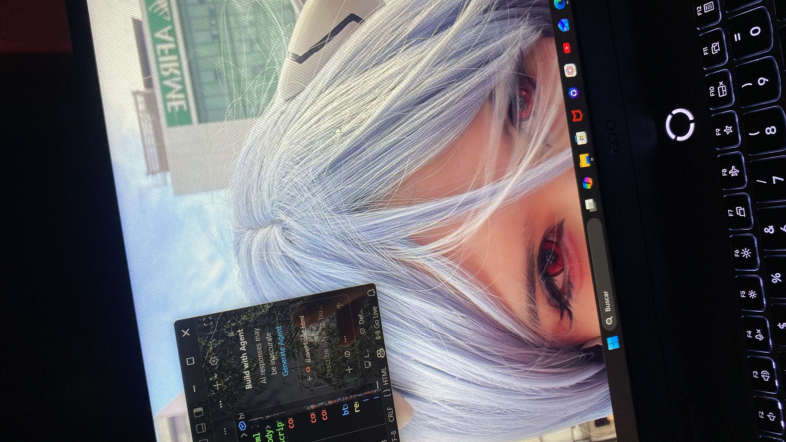
✧ Obviiiiis iba a mencionar mi nuevo fondo de pantalla, lo adoro, no tienes idea de cuánto tiempo he querido tenerte de fondo, cada vez que veo mi teléfono me saca una sonrisa porque me recuerda a ti, aunque siendo sincero eso no se compara con la idea de tenerte de foto de perfil, de nombre en todas mis redes y básicamente convertirme en una fanpage oficial tuya KAJAJSAJA, porque si alguien me preguntara cuál es mi persona favorita no tendría ni que pensarlo dos veces, siempre serás tú. (๑ᵔ⤙ᵔ๑) ✧
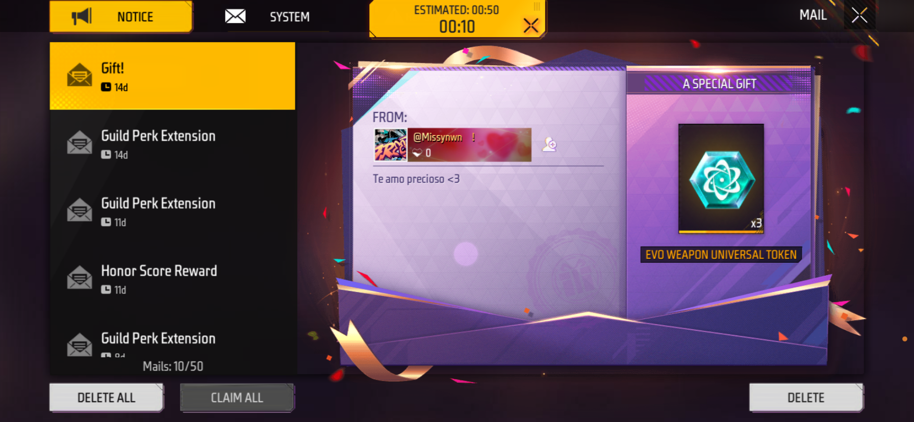
✧ Un simple regalito en el frifrai, pero la verdad es que yo siempre voy a romantizar hasta la mínima cosa que hagas, porque cuando algo viene de ti automáticamente se vuelve especial para mí, no importa si es un gran detalle o algo pequeñito, yo siempre voy a guardarlo con cariño porque significa que pensaste en mí aunque fuera por un momento, tú tírame de un edificio y yo voy a decir que lo hiciste porque no querías que tuviera miedo a las alturas Uwu, porque hasta este punto yo ya encontré la manera de convertir cualquier cosa que venga de ti en algo bonito. (˵ • ᴗ - ˵ ) ✧
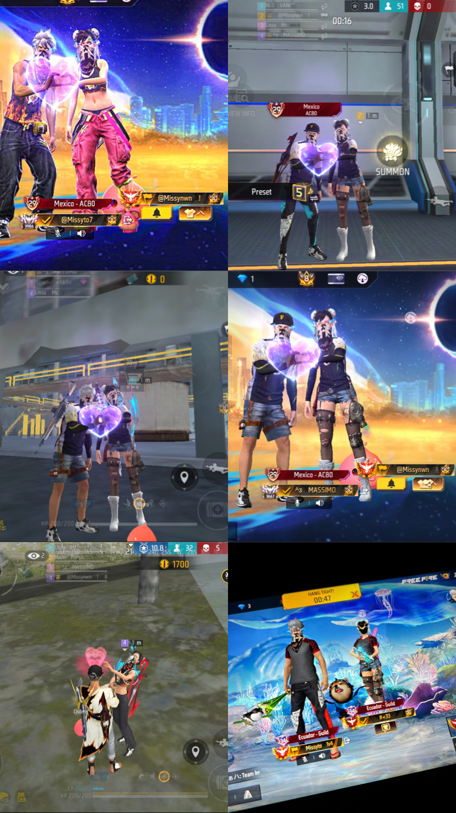
✧ La dueña de todas mis madrugadaaas, te adoro, me encanta estar contigo, ya sea mientras jugamos, mientras estamos en dc o simplemente compartiendo cualquier momento, siempre voy a disfrutar estar a tu lado porque haces que todo se sienta más bonito y especial, nunca escucharás un no de mi parte si se trata de ti o de pasar tiempo contigo, porque sinceramente una de mis cosas favoritas es compartir mis días y mis noches contigo, escuchar tu voz, reír contigo y seguir creando recuerdos que voy a guardar con muchísimo cariño, porque no importa qué estemos haciendo, si es contigo siempre será uno de mis momentos favoritos. ˶ᵔ ᵕ ᵔ˶ ✧
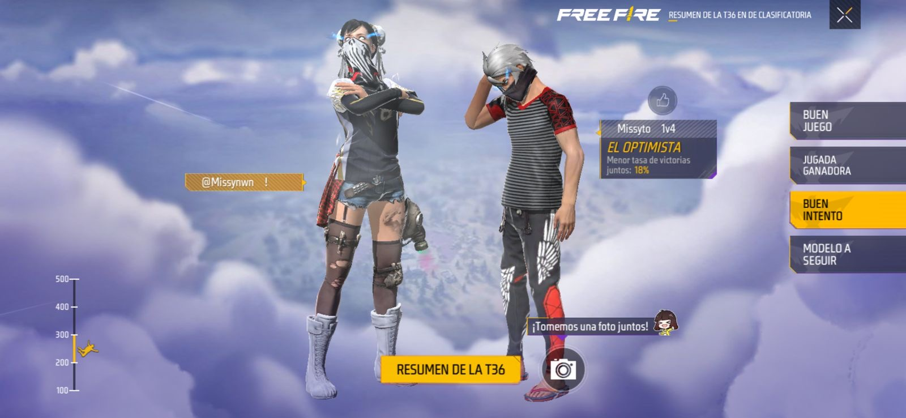
✧ Sé que faltaron muchos momentos más, incluso capturas mucho más especiales, pero voy a dejarlas para futuras cositas que te quiero hacer, un poco parecidas a esta, porque por suerte todavía me quedan muchísimos recuerdos por guardar contigo y muchas maneras de demostrarte lo importante que eres para mí; por último quería mencionar una foto que me pasaste hace ratito, porque se volvió especial desde el momento en que la vi, ya que salimos juntos en algo y eso automáticamente hizo que la guardara con muchísimo cariño, ojalá así sean todas nuestras futuras estadísticas en br y de; te adoro y espero que todas estas lindas palabras puedan hacerte entender aunque sea un poquititito de lo que siento por ti, porque la verdad es que ni todas estas capturas ni todas estas palabras alcanzan para explicar lo mucho que significas para mí, aún me faltan muchísimas cosas por hacer a tu lado, muchísimos recuerdos por crear contigo y muchísimos momentos que quiero seguir atesorando para siempre, porque si algo tengo claro es que todavía quiero seguir escribiendo muchas historias contigo, amor. 𐔌՞꜆. ̫.꜀՞𐦯 ✧